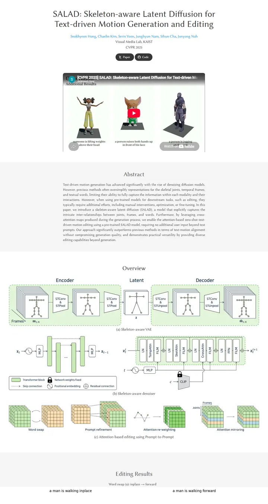

SALAD: Skeleton-aware Latent Diffusion for Text-driven Motion Generation and Editing
A quiet typeset monograph, its grey and white plates turning one after another.

Checked against the rendered page. chosen_because calls the face a humanist serif; Linux Biolinum is the humanist sans companion of Libertine (flared strokes), documented as such. All text is weight 400.
Why it is here
Elegant humanist serif throughout, alternating grey and white section bands, a generous measure and a clean wide schematic. Restrained and refined.
Overview
Color Palette
Typography
Linux Biolinum
SALAD: Skeleton-aware Latent Diffusion for Text-driven Motion Generati
Abstract · Method · Results · BibTeX — 0123456789
Spacing & Shape
Page Modules
Guidelines
More like this

GAMEBoT: Transparent Assessment of LLM Reasoning in Games
A tidy game-arena scoreboard: a mascot crest over a navy title, then cool grey-blue gradient bands holding news cards and violet-headed score tables.

InstructPart: Task-Oriented Part Segmentation with Instruction Reasoning
A lab notebook in grey and white stripes, where the title marks its own key words in teal and a dashed-panel kettle explains the task before you read a line.

Symmetrical Visual Contrastive Optimization: Aligning Vision-Language Models with Minimal Contrastive Images
A two-color argument: cyan means the matching image, orange the mismatched one, and that code runs unbroken from the prose highlights into every figure across alternating grey and white bands.

Slamming: Training a Speech Language Model on One GPU in a Day
A one-chart argument: a big annotated scaling plot sits where the teaser video would be, then a grey abstract and a quiet grid of audio players tagged by GPU budget.

Peeking Ahead of the Field Study: Exploring VLM Personas as Support Tools for Embodied Studies in HCI
A field notebook taped open on a white desk: a tall soft-gray headline, a long line of sky-blue names, and a salmon-to-sand storyboard that explains the study in three panels.

Reflection Separation from a Single Image via Joint Latent Diffusion
A pane of night glass you can wipe clean with one drag.